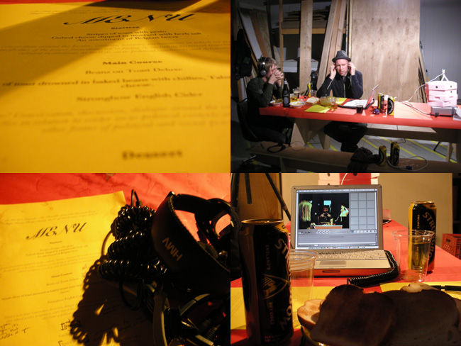

basekamp > events
Plausible Artworlds
alt.SPACE summit (at SPACE media centre, London, June-July 2007)
Team Players for Plausible Artworlds (at ICA Philly, Jan-Mar 2007)
Strategic Planning Weekend (at Basekamp space, Sept-Oct 2006)
www.PlausibleArtworlds.org (for updated info about the project)
alt.SPACE summit
The Plausible Artworlds Research Group
DATES: June Through July-2007
LOCATION: SPACE media centre, London

Taking the Plausible Artworlds Strategic Planning Weekend and the recent Plausible Artworlds program of events at the ICA in Philadelphia as a point of departure, we're now setting up a Plausible Artworlds Research Group as part of the alt.SPACE Network of Artist Research Groups to further explore some of the issues brought up both through the planning weekend and ICA events themselves and the informal conversations that took place around them, and in a number of interesting discussions on the Plausible Artworlds web forum. The primary intentions behind the research group - which is merely a small part of the wider Plausible Artworlds project - is to explore the various forms of collaboration and collectivity that feeds into this project, both through the historical trajectories they form part of and in terms of their function as prototypes for future forms of collective organization and practice. Initially the group will operate mainly through regular Skype dinner parties and themed discussions, many of which will follow on directly from the conversations on the Plausible Artworlds forum (see below).
Skype Dinner Parties: As a starting point for a research project that will further explore the notion of Plausible Artworlds, interlinked with the wider Plausible Artworlds project initiated by Basekamp in 2006, we're currently inviting members of the initial planning group for the project, as well as other whose practice have in some part been part of the project or relate to the wider issue of reimagining artworlds, to join us at a series of Skype based dinner parties, each on a specific theme and taking a specific form.
discussion threads: Taking some of the more research based topics on the Plausible Artworlds site - www.plausibleartworlds.org - as a starting point for further discussion, this page contains a number of discussion threads on different aspects of the notion of 'plausible artworlds'. Some of these may be followed up on this wiwi, through further discussion, reading, examples, etc.; some of them may become conversation starters at the Plausible Artworlds Research Group Dinner Parties; some of them may simply function as documentation of the planning process of the Plausible Artworlds project, an experience we can use this site also to explore, research further and reflect upon. Feel free also to open up new threads for discussion.
Please visit altSPACE.info for current updates on this event
Please visit PlausibleArtworlds.org for current info on the overall Plausible Artworlds project